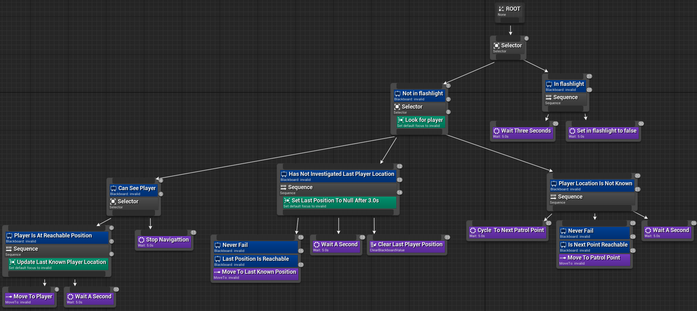

The capstone semester course at Ohio State University for the computer graphics and game design track breaks students into groups, mine being composed of four individuals including me, to create a game in Unity. Haunted Electrician, the game my group created, had the player act as an electrician trying to restore power to a haunted mansion in order to escape. Throughout the game the player would solve puzzles and read notes of previous events that took place while being continuously pursued by an enemy. The final version of the game at the end of the semester had all the original ideas for the game realized but I believe more time would have allowed for needed polished to get the intended experience.
The different game states for dealing with allowed input and logic were implemented using a polymorphic singleton pattern for each game state. For game state changes the new game state singleton would be passed into a staic game state manger class. This would call clean up the previous game state and call any set up for the new game state. The entering and exit of different states would enable and disable input as well as pausing and unpausing game logic. Along with managing the game state singletons this manager class also dealt with asynchronously loading into different scenes of the game. The function dealing with asynchronous loading of scenes could also be passed a game state singleton to allow quick transition from a main menu state into the playable game state.
One of the requirements for the development of the capstone project was to use Unity's newer input system. An input manager was created to deal with the enabling and assignment of the different input actions. The input logic was encapsulated into input commands which also stored all relevant references and values for the input action. This encapsulation made it easier to implement new input actions and helped reduce clutter in other classes.
AI for the enemy was done with a behavior tree which I had prior experience using in Unreal Engine. The nodes that composed the tree were BTTask, BTService, BTDecorator, and BTComposite which are all children of a base node class. A BehaviorTree class would handle the start of the tree execution as well as contained the blackboard keys and values to be accessed by the tree at any point of execution. The BehaviorTree class did not hold any AI logic or tree construction, instead a separate AI class would handle the blackboard, node and tree construction. The navigation for the ai was done with the provided navigation package.
The following image is a visual representation of the behavior tree created in Unreal Engine purely for demonstration purpose and is not functional.
Below is the actual construction of the behavior tree in csharp. This does not include the blackboard keys and the initialization of their values.
//sequence
BTT_SetAgentChaseSpeed startRunning = new BTT_SetAgentChaseSpeed(patrollingBehaviorTree, chaseSpeed);
BTT_MoveToPosition moveToPlayer = new BTT_MoveToPosition(patrollingBehaviorTree, BlackboardKey.FollowingGameObject, chaseSpeed,acceptanceRadius);
BTT_CallMethodByName startAttack = new BTT_CallMethodByName(patrollingBehaviorTree, "Attack", new object[] { }, this, typeof(FollowingAI));
BTS_CopyOverValue setLastPlayerLocation = new BTS_CopyOverValue(patrollingBehaviorTree, 0.2f, BlackboardKey.FollowingGameObject, BlackboardKey.LastFollowingLocation);
BTC_Sequence followAndAttack = new BTC_Sequence("Follow And Attack Sequence", patrollingBehaviorTree, new List() { startRunning, moveToPlayer, startAttack }, new List() { setLastPlayerLocation });
BTD_IsReachablePosition canReachPlayer = new BTD_IsReachablePosition(patrollingBehaviorTree, followAndAttack, BlackboardKey.FollowingGameObject, acceptanceRadius);
//task
BTT_StopFollowing stopFollowingPlayer = new BTT_StopFollowing(patrollingBehaviorTree);
//selector
BTC_Selector chasePlayerOrStop = new BTC_Selector("Chase Player, Stop If Unreachable", patrollingBehaviorTree, new List() { canReachPlayer, stopFollowingPlayer });
BTD_IsNotNull canSeePlayer = new BTD_IsNotNull(patrollingBehaviorTree, chasePlayerOrStop, BlackboardKey.FollowingGameObject);
//sequence
BTT_SetAgentChaseSpeed startWalking = new BTT_SetAgentChaseSpeed(patrollingBehaviorTree, chaseSpeed);
BTT_MoveToPosition moveToLastPlayerPosition = new BTT_MoveToPosition(patrollingBehaviorTree, BlackboardKey.LastFollowingLocation,chaseSpeed, acceptanceRadius);
BTD_IsReachablePosition lastPositionIsReachable = new BTD_IsReachablePosition(patrollingBehaviorTree, moveToLastPlayerPosition, BlackboardKey.LastFollowingLocation, acceptanceRadius);
BTD_IsNotNull lastPositionStillExists = new BTD_IsNotNull(patrollingBehaviorTree, lastPositionIsReachable, BlackboardKey.LastFollowingLocation);
BTD_NeverFail alwaysAttemptLastPosition = new BTD_NeverFail(patrollingBehaviorTree, lastPositionStillExists);
BTT_WaitForSeconds lookForPlayer = new BTT_WaitForSeconds(patrollingBehaviorTree, 1.0f);
BTT_SetNull clearLastPosition = new BTT_SetNull(patrollingBehaviorTree, BlackboardKey.LastFollowingLocation);
BTS_SetNullAfterInterval outOfSightOutOfMind = new BTS_SetNullAfterInterval(patrollingBehaviorTree, 3.0f, BlackboardKey.LastFollowingLocation);
BTC_Sequence searchForPlayerIfLastLocationKnown = new BTC_Sequence("Go To Last Player Position If Known", patrollingBehaviorTree, new List() { startWalking, alwaysAttemptLastPosition, lookForPlayer, clearLastPosition }, new List() { outOfSightOutOfMind });
BTD_IsNotNull hasSearchedLastPlayerLocation = new BTD_IsNotNull(patrollingBehaviorTree, searchForPlayerIfLastLocationKnown, BlackboardKey.LastFollowingLocation);
//sequence
BTT_SetAgentChaseSpeed startPatrolling = new BTT_SetAgentChaseSpeed(patrollingBehaviorTree, walkSpeed);
BTT_CycleThroughList cycleToNextPatrolPoint = new BTT_CycleThroughList(patrollingBehaviorTree, BlackboardKey.PatrolPoints, BlackboardKey.NextPatrolPoint);
BTT_MoveToPosition moveToNextPatrolPoint = new BTT_MoveToPosition(patrollingBehaviorTree, BlackboardKey.NextPatrolPoint, walkSpeed,patrolAcceptanceRadius);
BTC_Sequence patrolMovementSequence = new BTC_Sequence("Patrol if point reachable", patrollingBehaviorTree, new List() { moveToNextPatrolPoint });
BTD_IsReachablePosition canReachNextPatrolPoint = new BTD_IsReachablePosition(patrollingBehaviorTree, patrolMovementSequence, BlackboardKey.NextPatrolPoint, acceptanceRadius);
BTD_NeverFail alwaysAttemptNextPatrolPoint = new BTD_NeverFail(patrollingBehaviorTree, canReachNextPatrolPoint);
BTC_Sequence patrolMap = new BTC_Sequence("Patrol Map Sequence", patrollingBehaviorTree, new List() { startPatrolling, cycleToNextPatrolPoint, alwaysAttemptNextPatrolPoint/*, stopAtPatrolPoint*/ });
BTD_IsNull patrolIfPlayerLocationNotKnown = new BTD_IsNull(patrollingBehaviorTree, patrolMap, BlackboardKey.FollowingGameObject);
//selector
BTS_SetObjectIfSeen setPlayerPositionIfVisible = new BTS_SetObjectIfSeen(patrollingBehaviorTree, 0.2f, BlackboardKey.FollowingGameObject);
BTC_Selector patrolAndLookForPlayer = new BTC_Selector("Patrol And Look For Player", patrollingBehaviorTree, new List() { canSeePlayer, hasSearchedLastPlayerLocation, patrolIfPlayerLocationNotKnown }, new List() { setPlayerPositionIfVisible });
BTD_IsNotTrue notInFlashLight = new BTD_IsNotTrue(patrollingBehaviorTree, patrolAndLookForPlayer, BlackboardKey.ReactingToFlashlight);
//seqeuence
BTT_StopFollowing stopAndBurn = new BTT_StopFollowing(patrollingBehaviorTree);
BTT_SetNull forgetPlayer = new BTT_SetNull(patrollingBehaviorTree, BlackboardKey.FollowingGameObject);
BTT_SetNull dontSearch = new BTT_SetNull(patrollingBehaviorTree, BlackboardKey.LastFollowingLocation);
BTT_SetBlackboardToValue deagro = new BTT_SetBlackboardToValue(patrollingBehaviorTree, BlackboardKey.Attacking, false);
BTT_SetBlackboardToValue setStunTime = new BTT_SetBlackboardToValue(patrollingBehaviorTree, BlackboardKey.StunTime, 5.0f);
BTT_CallMethodByName getShinedDirection = new BTT_CallMethodByName(patrollingBehaviorTree, "GetSearchPosition", new object[] { }, this, typeof(FollowingAI));
BTT_SetBlackboardToValue removeShinedStatus = new BTT_SetBlackboardToValue(patrollingBehaviorTree, BlackboardKey.InFlashLightBeam, false);
BTC_Sequence reactToFlashlight = new BTC_Sequence("React to flashlight", patrollingBehaviorTree, new List() { stopAndBurn, forgetPlayer, dontSearch, deagro, setStunTime, getShinedDirection, removeShinedStatus });
BTD_IsTrue isInFlashlight = new BTD_IsTrue(patrollingBehaviorTree, reactToFlashlight, BlackboardKey.InFlashLightBeam);
//sequence
BTT_WaitForSeconds burnWait = new BTT_WaitForSeconds(patrollingBehaviorTree, 1.0f);
BTT_CallMethodByName decrementStun = new BTT_CallMethodByName(patrollingBehaviorTree, "DecrementStun", new object[] { }, this, typeof(FollowingAI));
BTC_Sequence stunSequence = new BTC_Sequence("Stun Sequence", patrollingBehaviorTree, new List() { burnWait, decrementStun });
BTD_EvaluateFloatCondition stunGreaterThanZero = new BTD_EvaluateFloatCondition(patrollingBehaviorTree, stunSequence, BlackboardKey.StunTime, BlackboardKey.Epsilon, ERelationalOperator.GreaterThan);
BTD_IsNotTrue isNotInFlashlight = new BTD_IsNotTrue(patrollingBehaviorTree, stunGreaterThanZero, BlackboardKey.InFlashLightBeam);
BTD_Repeater loopStun = new BTD_Repeater(patrollingBehaviorTree, isNotInFlashlight);
BTD_NeverFail loopTilFail = new BTD_NeverFail(patrollingBehaviorTree, loopStun);
//sequence
BTT_SetAgentChaseSpeed startInvestigating = new BTT_SetAgentChaseSpeed(patrollingBehaviorTree, walkSpeed);
BTT_MoveToPosition searchLight = new BTT_MoveToPosition(patrollingBehaviorTree, BlackboardKey.SearchPosition, walkSpeed,2.0f);
BTT_WaitForSeconds investigateLight = new BTT_WaitForSeconds(patrollingBehaviorTree, 2.0f);
BTS_SetObjectIfSeen searchForPlayerWhereLightShined = new BTS_SetObjectIfSeen(patrollingBehaviorTree, 0.2f, BlackboardKey.FollowingGameObject);
BTC_Sequence investigateSequence = new BTC_Sequence("Investigate flashlight", patrollingBehaviorTree, new List() { startInvestigating, searchLight, investigateLight },new List { searchForPlayerWhereLightShined });
BTD_IsNull seachWhileCantSeePlayer = new BTD_IsNull(patrollingBehaviorTree, investigateSequence, BlackboardKey.FollowingGameObject);
//task
BTT_SetBlackboardToValue stopReactionFallBack = new BTT_SetBlackboardToValue(patrollingBehaviorTree, BlackboardKey.ReactingToFlashlight, false);
//selector
BTC_Selector stopReactingSelectorFallback = new BTC_Selector("StopReactingSelectorFallBack", patrollingBehaviorTree, new List { seachWhileCantSeePlayer, stopReactionFallBack });
//task
BTT_SetBlackboardToValue stopReaction = new BTT_SetBlackboardToValue(patrollingBehaviorTree, BlackboardKey.ReactingToFlashlight, false);
//sequence
BTC_Sequence sequence01 = new BTC_Sequence("sequence01", patrollingBehaviorTree, new List() { loopTilFail, stopReactingSelectorFallback, stopReaction });
BTD_IsNotTrue isNotInFlashlight_sequence01 = new BTD_IsNotTrue(patrollingBehaviorTree, sequence01, BlackboardKey.InFlashLightBeam);
//sequence
BTC_Sequence burnThenInvestigate = new BTC_Sequence("Flashlight burn and Investigate", patrollingBehaviorTree, new List() { isInFlashlight, isNotInFlashlight_sequence01 });
//selector
BTC_Selector patrolFollowOrBurn = new BTC_Selector("Patrol And Follow Or Burn In Light", patrollingBehaviorTree, new List() { notInFlashLight, burnThenInvestigate });
//selector
BTC_Selector selectorNode = new BTC_Selector("Root Selector", patrollingBehaviorTree, new List() { patrolFollowOrBurn });